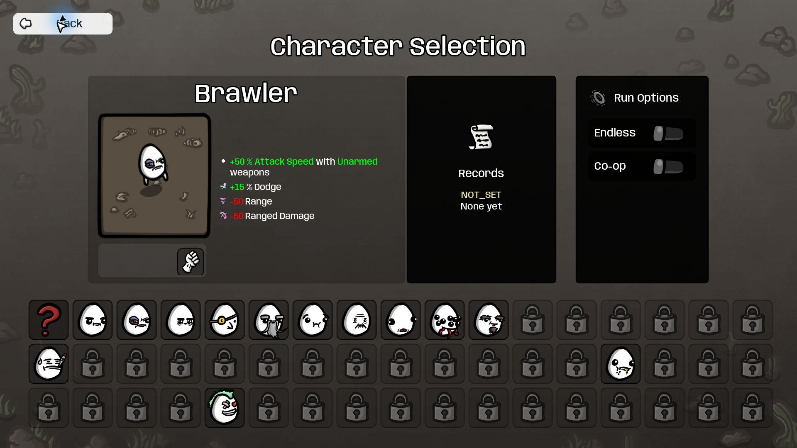
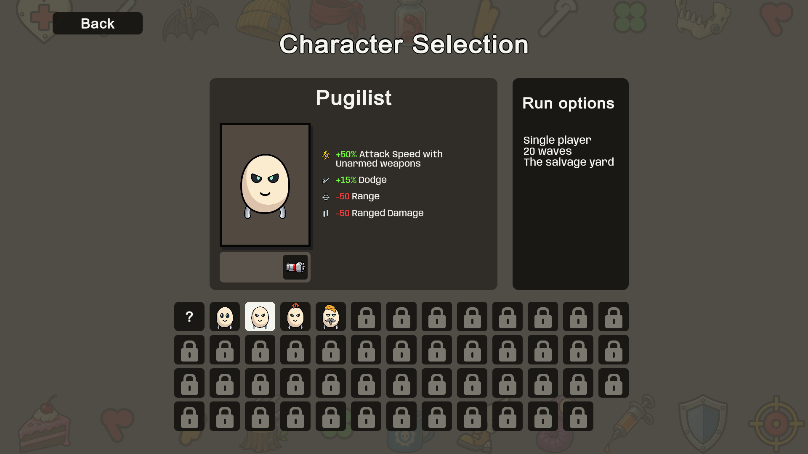
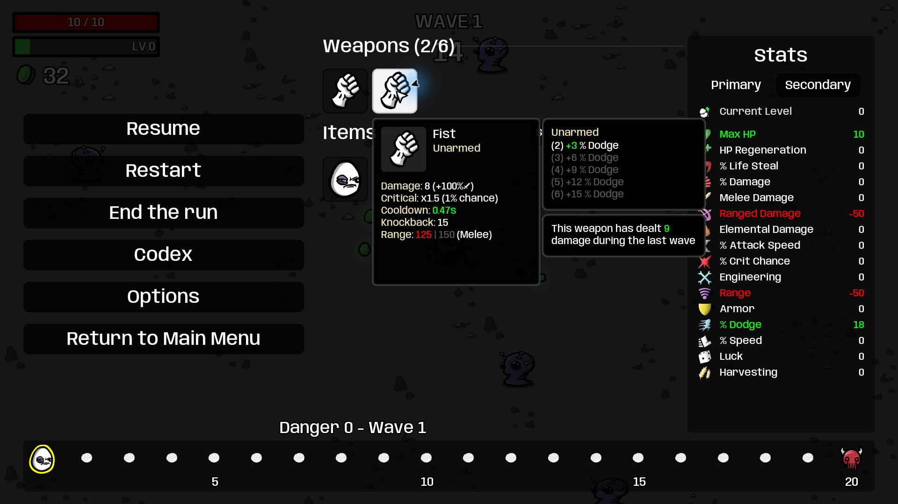
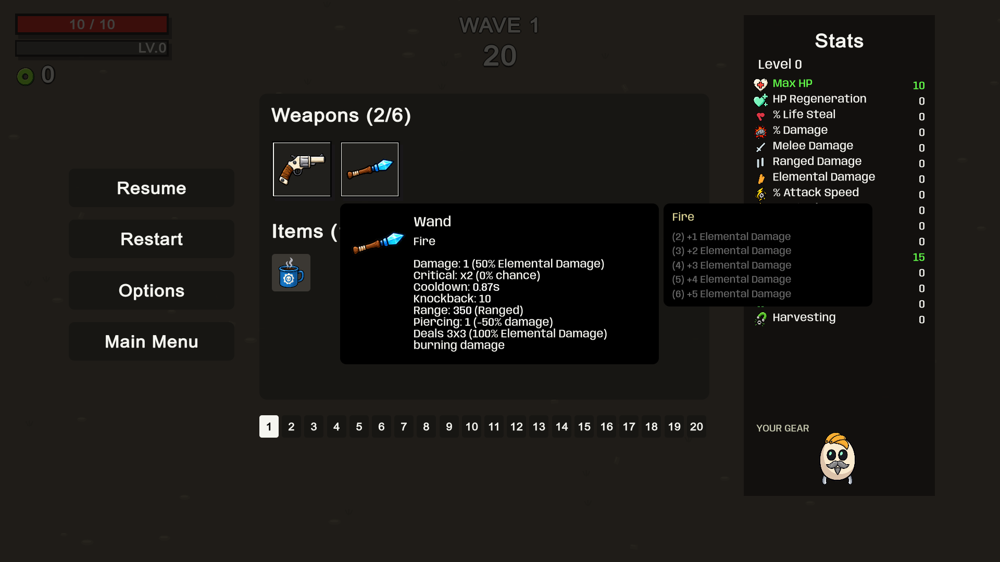
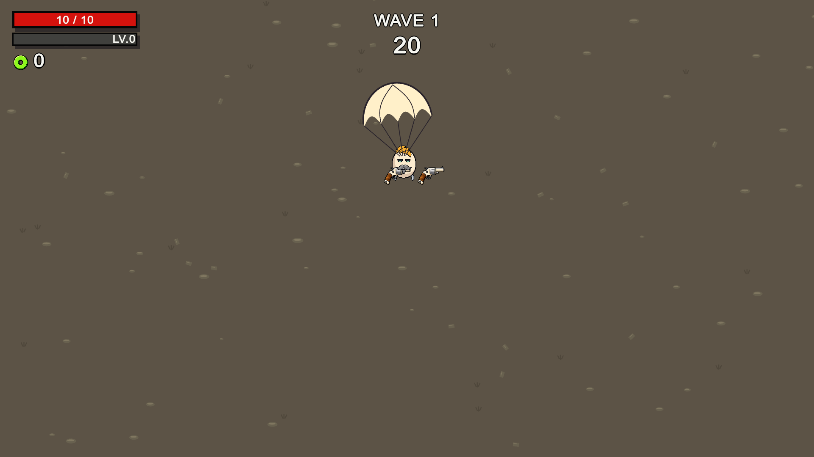
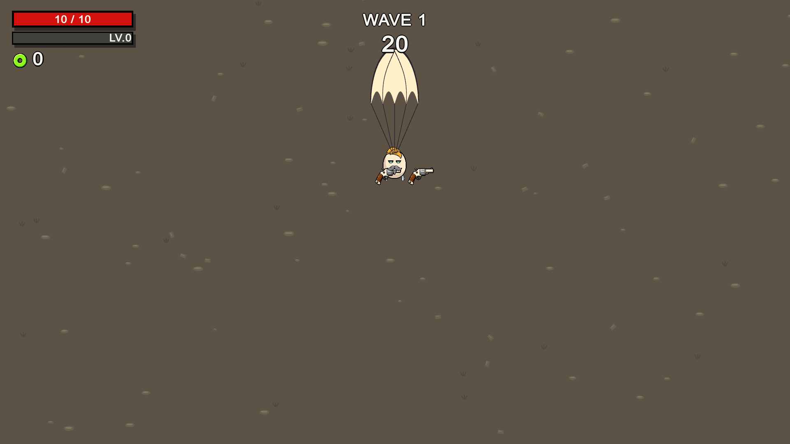
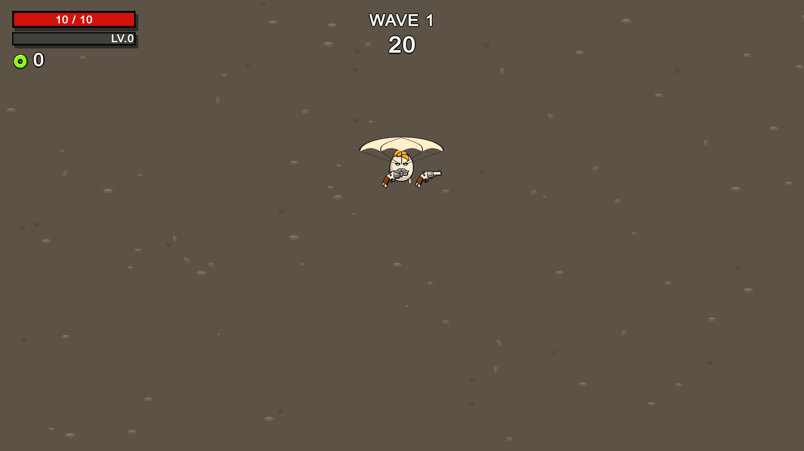
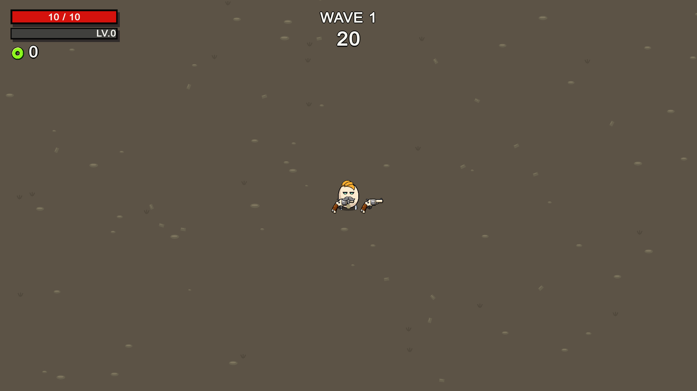

Reference screenshots from the supplied running Brotato project; Unity screenshots from staged runtime rendering. Original game art retained. 64 obtainable items; special-effect catalog remains incomplete.







